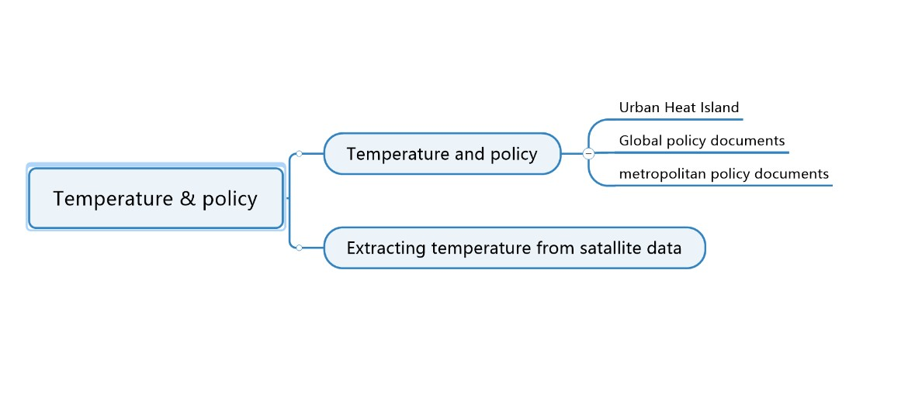

8 Temperature and policy
8.1 Summary
During the week we learnt about the application of remote sensing data to urban temperature analysis and the policies associated with it at different spatial scales. More specifically I learnt about what the urban heat island effect is and how it is formed, and how the heat island effect can be harmful to cities. Many cities have developed their own policies to address the heat island effect, and there is a growing concern about the urban thermal environment at both the global and local scales, and a variety of technical approaches are being used to address these issues.

8.2 Application
Regarding the urban heat island effect, there are currently three main methods of research on this phenomenon: first, the ground observation method, mainly based on information from ground weather stations and supplementary fixed-point measurements, to analyze and compare the data; second, the use of remote sensing and GIS technology, mainly using satellite remote sensing technology to invert and project the surface temperature and use GIS technology to analyze and research; third, the numerical simulation method (Blaschke, 2010)，atmospheric and spatial modelling using meteorological and other data to study changes in the urban heat island effect.
In an article the authors examine how inequalities in local structures may have a significant impact on the health of vulnerable groups. Historic urban policies, such as redlining, have contributed to the current inequalities in exposure to intra-urban heat. But it is not clear whether these heat inequalities are associated with heat-related health disparities among people. Data from two Texas cities were used in this study and the relationship between heat conditions within the cities and heat-related emergency room visits was determined. Heat exposure was measured using diurnal ground surface temperature (LST).
8.3 Personal reflection
This week we have been learning about remote sensing in relation to urban temperature and related policies. As cities expand and develop, so does the urban climate. However, in the development of policies, there is often vague and empty rhetoric that can make it difficult to guide the planning of the next city. The use of remote sensing data analysis techniques can provide a degree of accuracy that can help researchers to quantify these issues and draw more accurate conclusions.